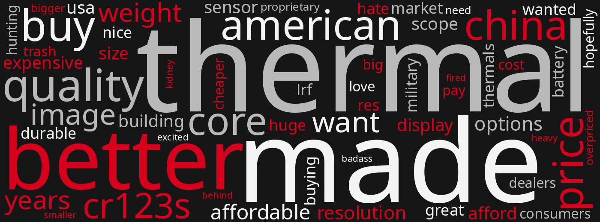
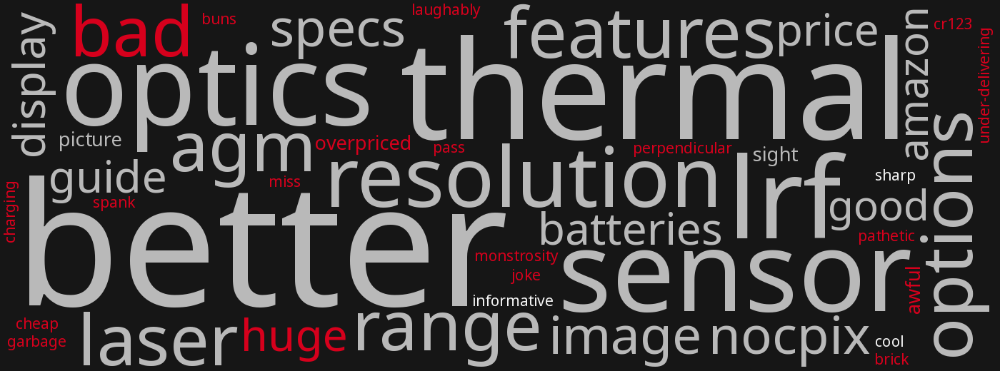

Date range
Next refresh5:00
Views by platform
Launch posts
| Platform | Views | Likes / reactions | Comments | Shares | Other |
|---|
What people are saying
Complaint in context
Praise or want
Topic

Tap to expand
Outside chatter
Complaint in context
Praise or want
Topic

Tap to expand
- Shark Coast Tactical, YouTube, , Trijicon REAP-IR 50 LRF | First Look at Trijicon’s New Thermal
- EuroOptic, Web, no date shown, REAP-IR category page listing REAP-IR-50LRF
- Comments on the Shark Coast video
- @matthewconnor5483, YouTube, 5 hours ago, comment
- @stronglikebull2994, YouTube, 3 hours ago, comment
- @kahukusgarlicbred2141, YouTube, 8 hours ago, comment
- @matthewconnor5483, YouTube, 5 hours ago, comment
- @Joe_9EDC, YouTube, 7 hours ago, comment
- @zulubravo9434, YouTube, 6 hours ago, comment
- @Fundingsecured42069, YouTube, 10 hours ago, comment
- @isaiahaguilar5977, YouTube, 5 hours ago, comment
- @carterm950, YouTube, 12 hours ago, comment
- @FirstLastGuy, YouTube, 6 hours ago, comment
- @iggmoeactual, YouTube, 3 hours ago, comment
- @aNevadaPerson, YouTube, 9 hours ago, comment
- @PorkPursuit, YouTube, 12 hours ago, comment
- @justincase6908, YouTube, 7 hours ago, comment
- @lucass4758, YouTube, 9 hours ago, comment
- @WettDoggTV, YouTube, 10 hours ago (edited), comment
- @tinaann3323, YouTube, 4 hours ago, comment
- @rmp5s, YouTube, 3 hours ago, comment
- @chandlerjackson7377, YouTube, 6 hours ago, comment
- @samhixon3593, YouTube, 2 hours ago, comment
- @donniesteen4982, YouTube, 11 hours ago, comment
- @dcleboski698, YouTube, 6 hours ago, comment
- @Deeked, YouTube, 1 hour ago, comment